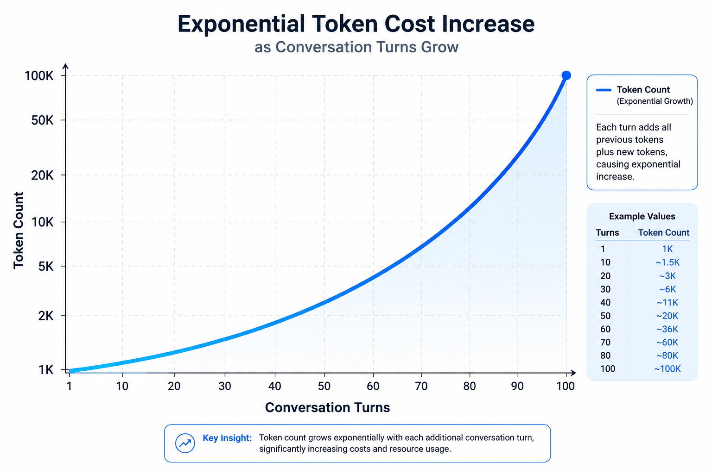

에이전트 메모리 시스템
AI 에게 기억을 선물하다
챗봇에서 파일 기반 지식 시스템으로
사용자의 입력을 체계적으로 저장하고 활용하는 방법
문제
왜 AI 에게 파일이 필요한가요?

Context Bloat
→
Token 비용 ↑
→
속도 ↓
📚
Lost in the Middle
Context Window 가 길어질수록 중앙부 Attention 이 하락하여 핵심 지시가 누락됩니다
💾
해결책: 파일 기반 기억
선택적 저장 + 검색으로 불필요한 Context 를 제거하고 효율성을 높입니다
💡Tip: 매 대화마다 과거 이력 전체를 포함하면 비용이 기하급수적으로 증가합니다.
비유
신입사원이 배우는 3 가지 지식 관리
📖
계층 1: 백과사전
회사 규정, 매뉴얼 외우기
변경 불가 고정 지식
📝
계층 2: 개인 노트 ← 주제
매일 새롭게 추가하는 메모
실시간 기록, 검색 가능
🗂️
계층 3: 참고 자료
책상 위에 준비된 문서
상황별 선택적 참조
💡Tip: 실제 업무에서 문서를 다루는 방식이 AI 의 데이터 처리 레이어와 일치합니다.
AI 의 3 층 기억
AI 도 3 가지 기억 방식을 활용합니다
L1: 사전 학습 (Pre-trained)
L2: 에이전트 메모리 (File System)
L3: 문서 참조 (RAG)
L1: Model
학습 시점: 2024 년
데이터량: 수 TB
변경 불가 고정 지식
L2: Memory ← 주제
학습 시점: 실시간
데이터량: 수 MB~GB
개인별 동적记忆
L3: Retrieval
학습 시점: 필요 시
데이터량: 수 GB~TB
외부 문서 검색
💡Tip: 오늘은 L2 '에이전트 메모리' 에 해당하는 파일 기반 지식 시스템을 다룹니다.
시스템 개요
에이전트 메모리 시스템
📊
처리 통계
일일 처리: 50~100 건
저장율: 20~30% (의미 있는 정보만)
⚡
처리 시간
추출: 2~5 초
분류: 1~3 초
총 처리: 5~10 초
💡Tip: 단편적인 대화는 구조화된 데이터로 치환되어 영구 보존됩니다.
컴파일 워크플로우
지식을 파일로 저장하는 3 단계
1. Ingest
대화에서 핵심 정보 적출
JSON/Markdown 포맷
2. Link
기존知识和 교차 참조 생성
Wiki-links 자동 연결
3. Lint
Schema 규칙 검증
모순 탐지 후 병합
💡Tip: 세 단계가 완료되면 지식이 영구 파일로 저장됩니다.
자동화
자동으로 파일을 정리하는 과정
⏰ CronJob
→
📜 Script 실행
→
🔄 파이프라인
→
✅ 완료
5 분 간격 실행
실패 시 재시도
완료 시 알림
📅
실행 스케줄
5 분 간격 배치 처리
메타데이터 갱신 + 의존성 재평가
📊
처리 대상
신규 파일 스캔
기존 파일 점수 갱신
불필요 파일 아카이브
💡Tip: 사람의 개입 없이 정해진 스케줄에 따라 자동으로 구동됩니다.
중요도
동적 점수에 따른 3 단계 분류
T1: 핵심 규칙
항상 참조해야 하는 행동 규칙
점수: 80~100
T2: 일상 지식
특정 상황에 꺼내보는 지식
점수: 40~79
T3: 보조 정보
요청 시 제공되는 배경 정보
점수: 0~39
점수 계산
우선순위 + 최신성 + 사용빈도 + 허브노드
💡Tip: 점수 계산과 감가상각 알고리즘을 통해 불필요한 Context 의 메모리 점유를 방지합니다.
주제 분류
지식을 주제별로 분류하는 체계
태그 기반 분류
물리적 폴더 분리가 아닌 Tag 와 Metadata 를 통한 논리적 분리
💡Tip: 특정 도메인에 종속되지 않고 다양한 주제를 수용할 수 있는 카테고리 확장을 지원합니다.
계층적 탐색
AI 가 지식을 찾는 4 단계
🗺️ Navigation
→
📋 Index Scan
→
🔍 Domain Filter
→
📖 Detail Read
탐색 프로토콜
최상위 Index 먼저 로드
도메인 파악 후 수 KB 페이지만 정밀 판독
토큰 최적화
전체 DB 조회: 10,000+ 토큰
계층 탐색: 500 토큰 미만
💡Tip: 대용량 DB 쿼리를 대체하는 토큰 최적화 탐색 기법입니다.
Thank You
세미나 완료
경험이 쌓일수록 스스로 지능을 고도화하는 아키텍처